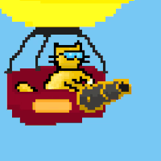
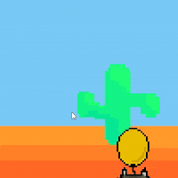
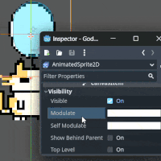
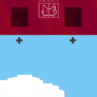

- Date
Depot Gato
NOTE: This is not a full-blown Technical Document, but rather in my own words a small overview of what went behind in making the Depot Gato. If you have a question or want to know more, reach out to me at v [at] Sadik [dot] in as always.
Game Summary Pitch
Depot Gato is simple 2D tower defense style game where you shoot balloons down which are abducting your cat friends.
Inspirations
-
Balloon Popping From Samsung CRT TV: Random balloon popping game from Samsung CRT TV. It was really bare bone had nothing other than moving circles and popping them. But the core concept is extremely simple and easy to make.
-
Plant vs Zombies: It’s tower defense game but giving the tower a personality is what brings the charm into the mechanics. Also the Spawning Lanes and Lawn mowers as lives are interesting mechanics.
-
Breath of the wild: Just using colors on same enemies to show different strength and different abilities.
Player Experience
A simple game with static background where with mouse you can point your cannon up and down. Different colored balloons let player know their speed in this case. There is cool down on cannon so player must fast but precise to shoot those balloons down. It’s simple mechanics to start with but judges you based on your reaction time and accuracy.
Platform
Game should be able to run Web.
Development Stack
- Godot: Game Engine
- Pixelorama: For Pixel art and Sprite sheet animations
- Git: To do version control
Genre
Single Player, Casual
Target Audience
Me, and anyone who just willing to waste some time playing as silly orange cat popping some balloons.
Gameplay overview
The player is a cat floating in balloon with a cannon pointing in direction of player mouse position in the window. On right side of screen from fixed 4 lanes balloons will spawn. Balloons are color coded to represent their difficulty. The player has to point toward the balloons and shoot them down which challenges the player’s reaction time.
Theme Interpretation (Just silly cats)
It does not have to be anything deep. All these gatos are very silly and it’s just that.
Game Mechanics
| Example | Mechanic |
|---|---|
|  |
Cannon |
|  |
Spawn Lanes |
|  |
Enemy |
|  |
Lives |
Theme Interpretation
Using bright and vibrant colors to represent casual, fun and silly nature of the game. All the colors used also represent the my total lack of understanding of art. Like a child drawing but with bit more structure and effort.
Design
Pixel Art is go to choice as it’s simple to make and maintain. As I’m the only person working on this it’s crucial to keep it easy but not minimalistic. Also don’t want to download any assets for art and make everything from scratch to keep them consistent.
Audio
Unlike art where I can at least draw little bit, I don’t have enough time to even start with music and sound design. Also learning everything at once might affect the finishing motivation of the game. For now all the sound assets will be downloaded from the internet.
UI
In the same spirit buttons and other UI elements will be also follow bright and vibrant colors. Font would also be pixelated but bold to emphasize the casual nature of the game.